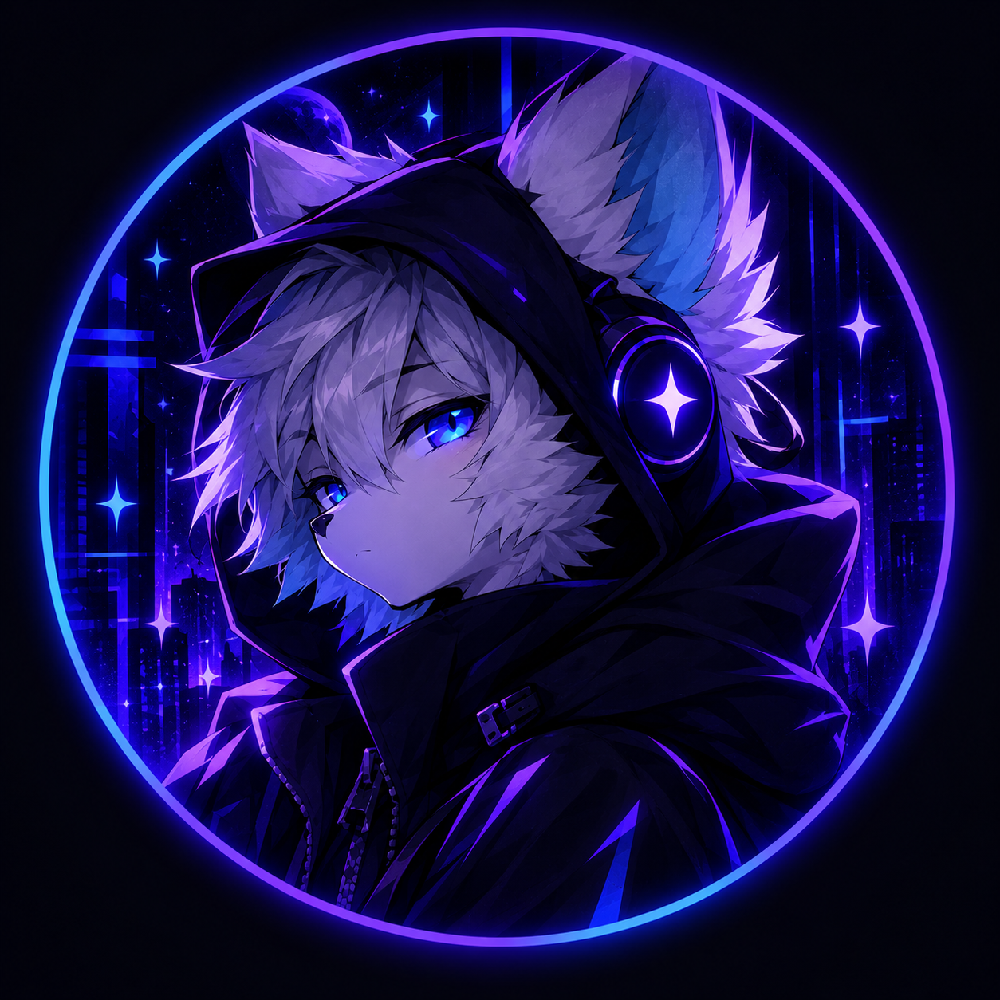

Discord-боты
Команды, модерация, роли, верификация, тикеты, логи и серверная автоматизация.
Создаю Discord и Telegram ботов, веб-проекты и автоматизацию на Python. Люблю разбираться в архитектуре, собирать проекты с нуля и превращать идеи в работающий код.

Web & Python Developer Также известен как Cr1staloriginal в социальных сетях.
Я веб-разработчик и Python-программист, изучаю программирование с декабря 2024 года. Мои основные навыки включают HTML, CSS, JavaScript и Python. Я создаю современные сайты, backend-системы, автоматизацию и атмосферные интерфейсы, а также разрабатываю Discord-ботов.
Практические направления, с которыми я работаю в своих проектах.
Команды, модерация, роли, верификация, тикеты, логи и серверная автоматизация.
Команды, сценарии обработки сообщений и автоматизация повседневных задач.
Адаптивные страницы, продуманные визуальные системы и интерактивные элементы.
SQLite, настройки приложений, работа с API и повторяющимися задачами.
Без искусственных процентов — технологии, которые я реально использую или изучаю в проектах.
Боты, автоматизация, backend-логика и работа с данными.
Команды, роли, модерация и автоматизация Discord-серверов.
Разработка Telegram-ботов и автоматизация взаимодействий.
Адаптивные интерфейсы и интерактивные страницы.
Базы данных, конфигурация проектов и исходный код.
Архитектуру Python-проектов, качество кода и работу с API.
Собственные проекты, эксперименты и работа, выполненная на заказ. В каждой карточке — моя роль и проверяемые ссылки.
Многофункциональный Discord-бот для сообществ: модерация и защита, верификация, тикеты, RP-команды, мини-игры и интеграции. Отдельная страница рассказывает о проекте и его структуре.
Изучить проект ↗ Исходный код ↗Личный сайт разработчика: адаптивный интерфейс, анимации, интерактивный терминал, публичная статистика GitHub и синхронизация аватара Discord.
Исходный код ↗Сайт студии, разработанный на заказ. В репозитории описаны регистрация, подтверждение email, личный кабинет, кошелёк, промокоды, реферальная система и админ-панель. Это клиентская работа, а не мой собственный продукт.
Открыть сайт ↗ Репозиторий ↗Экспериментальный веб-прототип с интерфейсом загрузки и поиска треков и идеей классификации музыкальных жанров. Представлен как эксперимент, а не как готовый коммерческий сервис.
Исходный код ↗Уточняю задачу, выделяю функции и продумываю структуру.
Реализую небольшими частями и проверяю, как они работают вместе.
Проверяю основные сценарии и исправляю найденные проблемы.
Навожу порядок в коде и постепенно добавляю возможности.
Начал изучать программирование и разбираться в Python.
Практиковался в создании ботов, интерфейсов, работе с API и базами данных.
Развиваю Fluffy и уделяю больше внимания архитектуре и удобству использования.
Загрузка публичных данных GitHub…
Показываю только реальные публичные данные — без выдуманных графиков коммитов и достижений.